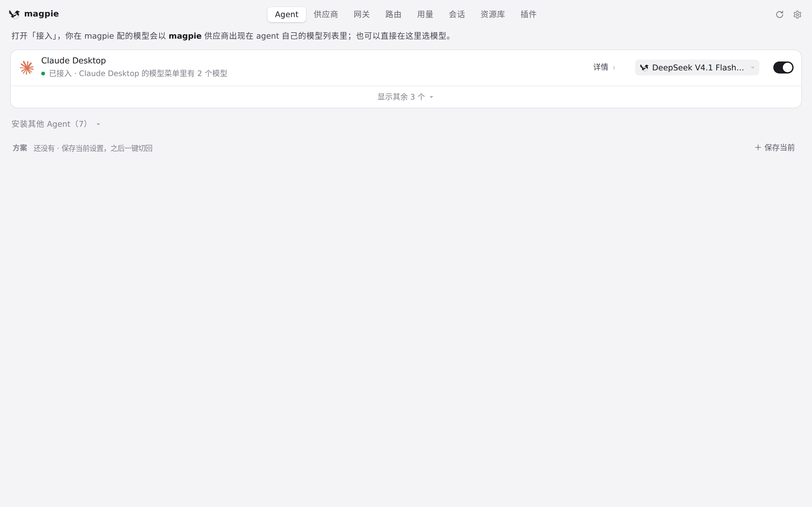
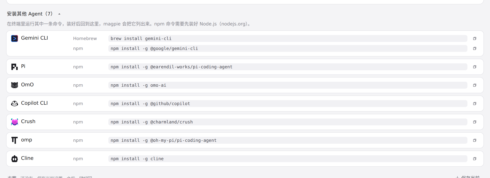

#427 界面预览
commit fa7158d · 回到 PR · 新增 Reasonix Studio 这个 Agent：注册后会在 Agents 页出现一行，带 executor 与 planner 两个模型栏（新模型选择器分支与专用图标），这两栏的「默认」选项说明改为「还原原来的选择」，并在最后一栏取消接入时弹出 Reasonix 专用的还原确认与状态提示。
红线是鼠标走过的轨迹，红色圆环是一次点击；底部文字是这一步在做什么。空格暂停，← → 逐段查看。

在 Agents 页找 Reasonix Studio 出现的位置 · Agents 页：已检测到的 Agent 列表，Reasonix Studio 不在其中

在 Agents 页找 Reasonix Studio 出现的位置 · 展开后的「安装其他 Agent」列表：检测到 Reasonix Studio 安装后，它就会从这里移到上面的 Agent 列表